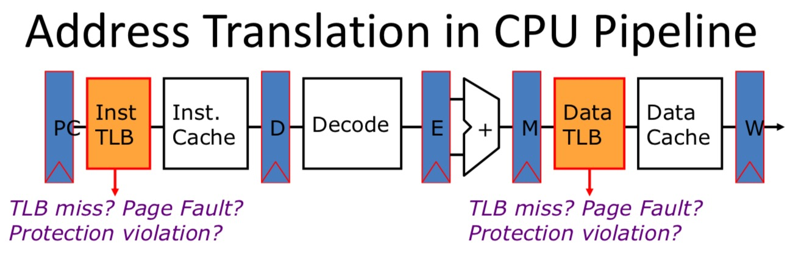
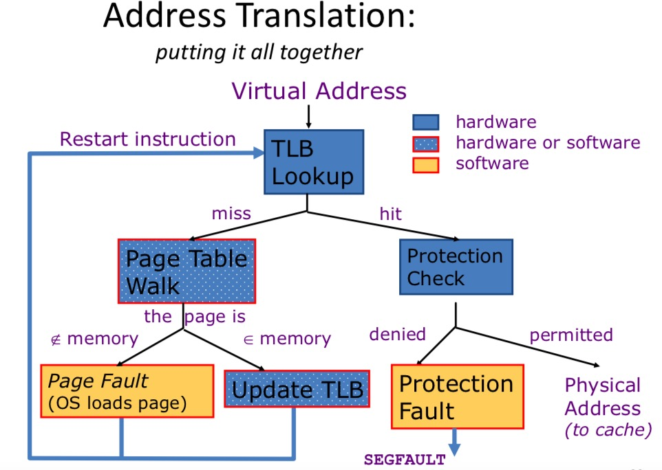

Memory Management
From
- early absolute addressing schemes to
- model virtual memory systems with support for virtual machine monitors.
Modern memory management system can be separated into orthogonal functions:
- Translation: translating virtual address to physical address
- Protection: permission to access word in memory.
- Virtual memory: transparent extension of memory space using slower disk space.
With address translation, the CPU pipeline turns into: 
Dynamic Address Translation
We all know about base and bound register. However, what's the motivation hehind base register and bound register.
- Location-independent programs: programming and storage management ease ==> need for a base register.
- Protection: independent programs should not affect each other inadvertently ==> need for a bound register.
Paged Memory Systems
Virtual Memory
- Pages: fixed-size block.
- Segments: variable-size block.
An overview for address translation: 
To better understand this pipeline, we need to learn
- TLB
- Page Table
- Protection Check
TLB(Translation Lookaside Buffer) Designs
- Typically 16-128 entries, usually fully associative.
- Random or FIFO replacement policy.
- No process information in TLB.
- TLB Reach: size of largest virtual address space that can be simultaneously mapped by TLB.
TLB Extensions
- Add Address Space Identifier(ASID), which allows TBL entries from multiple processes to be in TLB at same time. ID of address space(Process) is matched on.
- Variable page size, which can help increase reach on a per page basis.